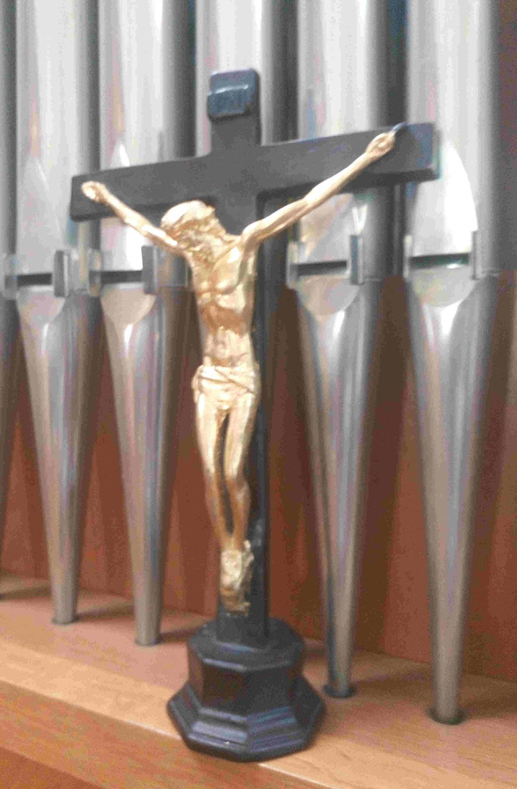

About
NailedToFaith is a Christian ministry based in Bulgaria, created to support the worship of the Church, to strengthen the community of believers in Christ, and to fulfill the Great Commission of the Lord Jesus to evangelize the world through music, testimonies, and digital connection.
Who We Are
We are members of the Global Methodist Church in Bulgaria, working together to build a welcoming online home for all denominations, believers, visitors, and supporters. Our ministry is based on our faith in Christ, our desire to serve our neighbor, and build a healthy Christian community.
Our Vision
Our goal is to create a platform where people can worship, learn, share music, testimonies, information and stay connected. We aim to support our local Bulgarian congregation while also reaching friends and supporters around the world.
If we can secure funding and sponsorship from developed countries, we will buy equipment and fund projects in the developing world.
Our Church
We are committed to scriptural holiness, discipleship, and a mission to bring more people to Christ. Our congregation in Bulgaria is small but growing, and this platform helps us stay connected and visible.
Our Platform
NailedToFaith brings together music, testimony, events, and communication in one simple, lightweight website. "Lightweight" because we want to keep things simple and humble.
Simple HTML code is easy to lean. This means we can build the site ourselves, and teach others.
A "word.doc" typed on any computer can easily be made to run in HTML code.
A simple language for the internet.
This means anyone can submit a document file and it can quickly be changed into a webpage.
Just as the early missionaries taught reading and writing skills,
we hope to continue that tradition but, in this new age with simple, easy to learn code.
As the project grows, new features will be added to support worship, learning, art, music, outreach and community life.
How You Can Help
If you feel led to support our ministry, you can pray for us, share our work, help build the website, contribute content and/or contribute financially. Every gift helps us continue serving our global community.
NailedToFaith — Serving Bulgaria and the World